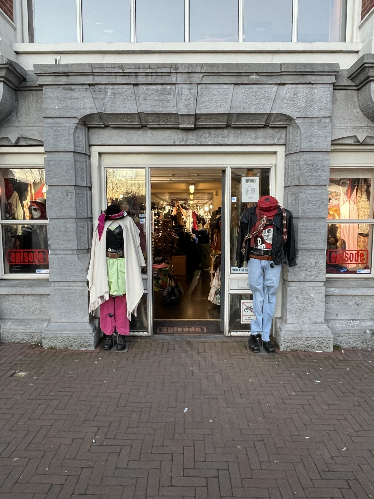

Wat kunt u doen?
Waar u bij kan helpen is meer in the vintage topic verdiepen en dit ook toepassen in het dagelijks leven. U zou bijvoorbeeld minder bij fast fashion winkels producten halen en meer naar vintage winkels gaan en kijken of zei ook het product hebben die u zou willen kopen. Het shoppen bij vintage winkels heeft ook veel voordelen, u helpt niet alleen bij het klimaat,co2 en watervervuiling, maar de producten zijn ook een stuk voordeliger als u dit vergelijkt met een fast fashion winkel.

Een paar van mijn favorite vintage winkels & waarom
Er zijn veel verschillende vintage winkels te vinden over heel amsterdam. Zelf heb ik een selectie gemaakt met mijn favoriete vintage winkels. Ik ben er ook van overtuigd dat jullie deze winkels leuk zullen vinden, want ze hebben allemaal hun eigen character. vinden.
Episode
Wat ik al eerder heb aangegeven is dat Episode een van de populaire vintage winkels is in Amsterdam. Episode heeft in Amsterdam in totaal 4 verschillende filiale die versprijd zijn over de stad. Hieronder is mijn favoriete winkel te zien met alle details.
Waar en openingstijden
Episode winkel is gevestigd:
Waterlooplein 1
De openingstijden zijn
Maandag t/m Zaterdag van 10.00 - 18.00
Zondag van 12.00 - 18.00
Contacten
Het nummer van Episode is:
0228-544-466
Socials van Episode:
Kilo store
De Kilo store heeft net als Episode 4 verschillende filialen in Amsterdam. De winkels zijn ook versprijd over de stad. Meeste vintage klanten zijn erg bekent met de Kilo store en dit komt door hun unique concept (alles af laten wegen). Dit zijn mijn favorite Kilo stores in amsterdam.

Waar en openingstijden
Kilo store is gevestigd:
Jodenbreestraat 158
De openingstijden zijn:
Maandag t/m Zaterdag van 11.00 - 19.00
Zondag van 11.00 - 18.00

Waar en openingstijden
Kilo store is gevestigd:
Albert Cuypstraat 100
De openingstijden zijn:
Alle dagen van 10.30 - 18.30
Contacten
Socials van Kilo store:
Waar je deze leuke vintage store online kan vinden is:
Bis!
Bis! is niet zo bekent bij vintage klanten en locals. De vintage winkel valt ook niet erg op, dus als je deze winkel niet hebt opgezocht zul je de winkel niet snel opmerken. Omdat dit het geval is vond ik het belangrijk om deze leuke vintage winkel te delen, vooral omdat ze veel verschillende producten verkopen.

Waar en openingstijden:
Bis! is gevestigd:
Sint Antoniesbreestraat 25-A
De openingstijden zijn:
Maandag van 12.00 - 18.00
Dinsdag t/m vrijdag van 11.00 - 18.00
Zaterdag van 11.00 t/m 17.00
Zondag van 12.00 - 17.00
Contacten
Het nummer van Bis! is:
020 620 3467 & 06 50 62 59 80
Socials van Bis!:
Candy
Candy is een erg kleurrijke winkel en ze hebben veel verschillende producten om uit te kiezen. Dit is de enigste winkel in heel Nederland. Het is niet super populair bij de vintage lovers, maar volgends mij krijgt de winkel steeds meer bekendheid.

Waar en openingstijden
Candy is gevestigd:
Waterlooplein 7
De openingstijden zijn:
Maandag t/m Zondag van 11.00 - 19.00
Contacten
Socials van Bis!:
Marbles Vintage
Marbles Vintage heeft 3 verschillende winkels in Amsterdam en de 3 verschillende winkels zijn allemaal versprijd over de stad. Marbles is ook best populair onder de vintage lovers en ze hebben ook een groot arsoortiment om uit te kiezen. Dit zijn mijn favorite Marbles vintage winkels.

Waar en openingstijden
Marbles vintage is gevestigd:
Ferdinand Bolstraat 28
De openingstijden zijn:
Maandag t/m Zondag van 11.00 - 19.00

Waar en openingstijden
Marbles vintage is gevestigd:
Staalstraat 30
De openingstijden zijn:
Maandag t/m Zondag van 11.00 - 19.00
Contacten
Socials van Marbles vintage:
Waar je deze leuke vintage store online kan vinden is: